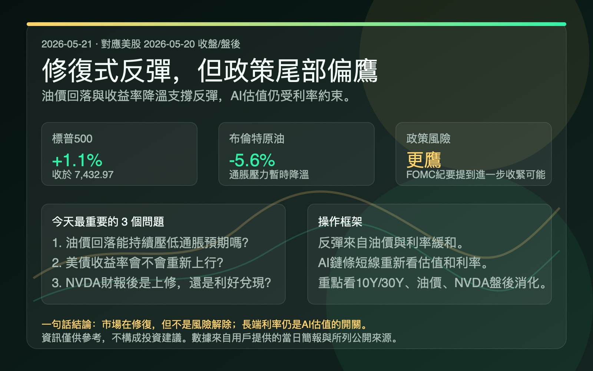

反弹的核心，不是风险消失，而是油价和利率暂时缓和。
市场主线仍是“油价 -> 通胀预期 -> 美债收益率 -> 科技/AI估值弹性”。NVDA 财报超预期但盘后反应谨慎，说明市场定价门槛已经明显抬高。

1. 美股修复标普500 +1.1%，道指 +1.3%，纳指 +1.5%。反弹受油价回落和10年期收益率降至4.60%下方支撑。
2. 政策偏鹰尾部风险4月FOMC纪要显示，如果通胀持续高于2%，可能需要进一步收紧政策。
3. AI半导体切回估值约束NVDA 业绩超预期但盘后股价谨慎，短线从“业绩确认”转向“超预期幅度能否继续抬升预期”。
4. 操作观察重点看10年/30年美债收益率、油价是否二次上行，以及NVDA财报后是否出现利好兑现式轮动。